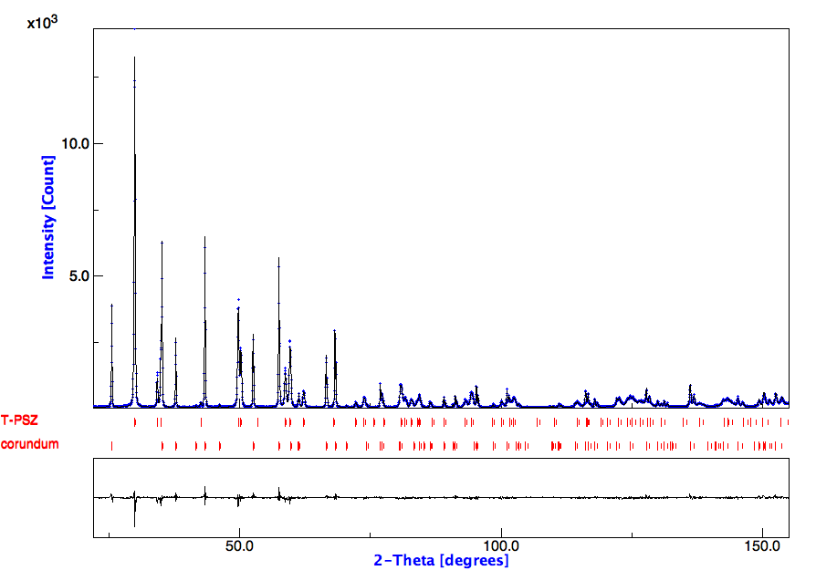
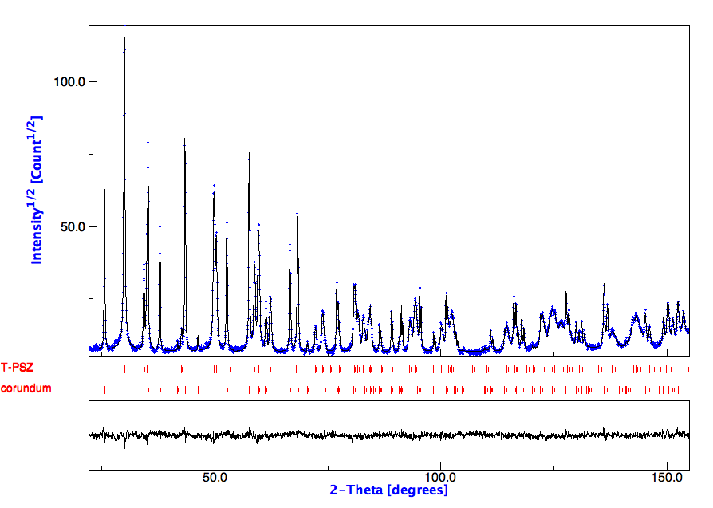
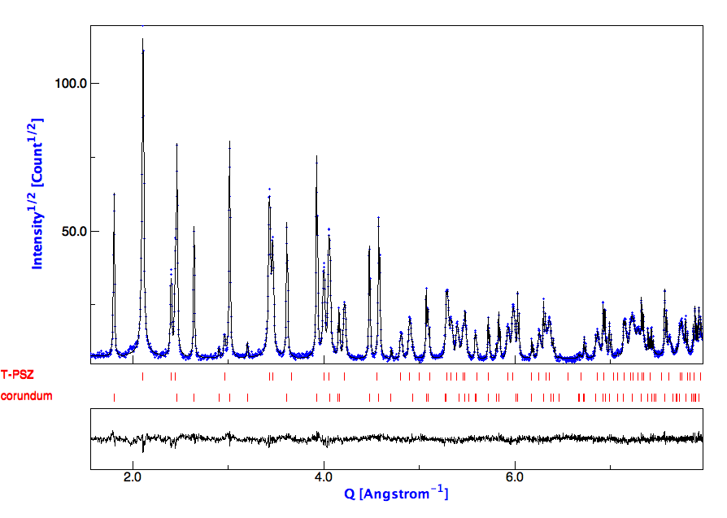
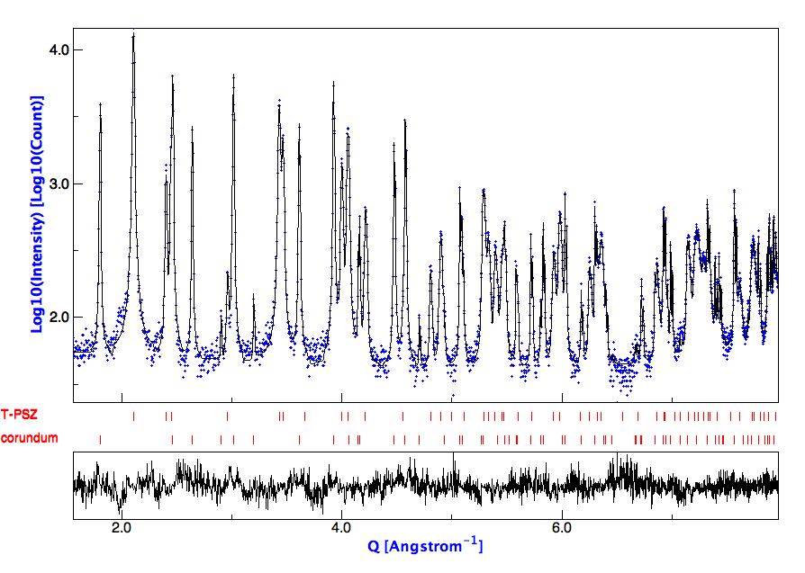
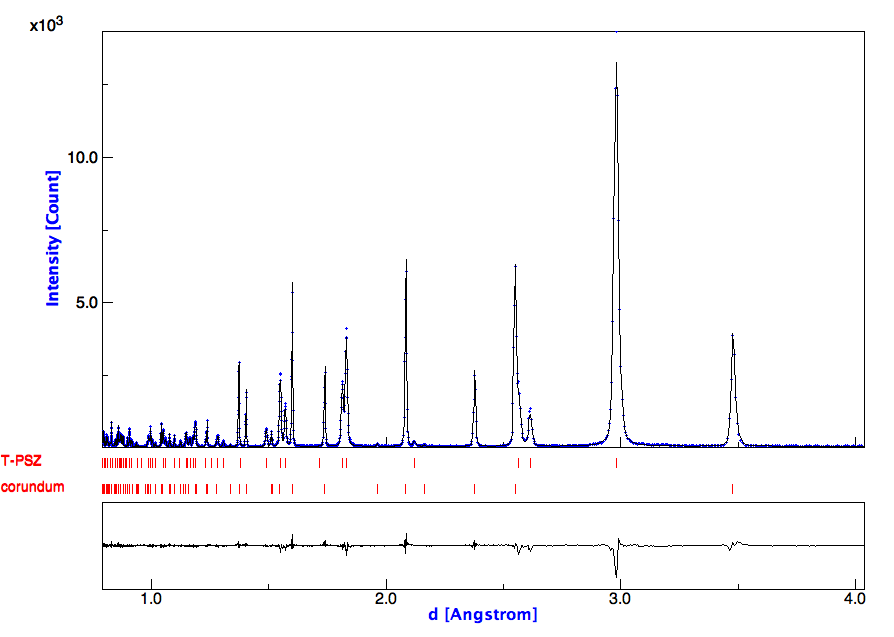
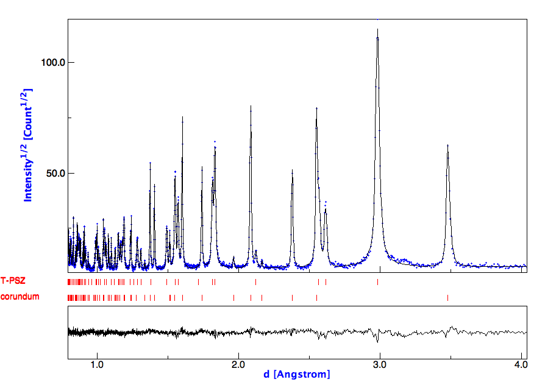

Comparison of different plotting options
From Rietveld list discussion on Q plotting, Luca Lutterotti
Conventional Rietveld plot in 2theta

Rietveld plot in square root for the intensity

Rietveld plot in Q-space and square root for the intensity

Rietveld plot in Q-space and log10 for the intensity

Rietveld plot in d-space and linear scale for the intensity

Rietveld plot in d-space and square root for the intensity
